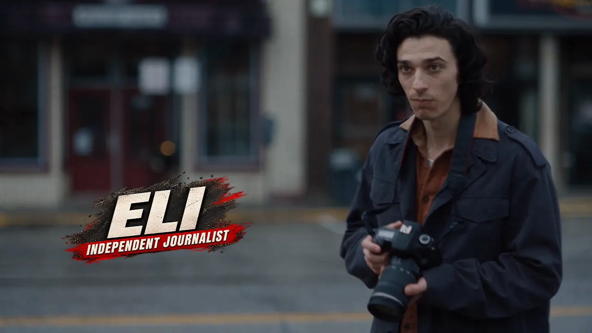
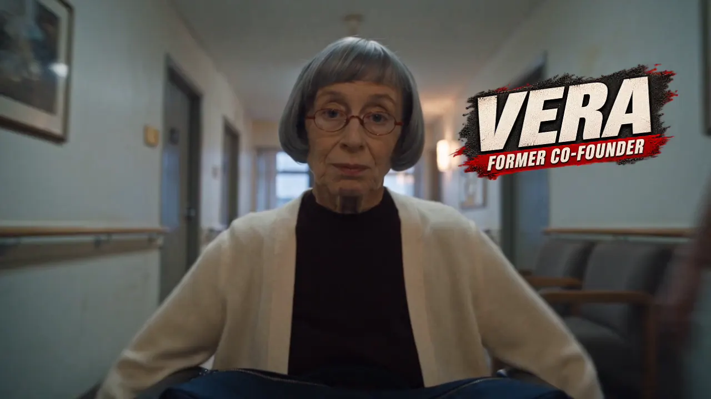
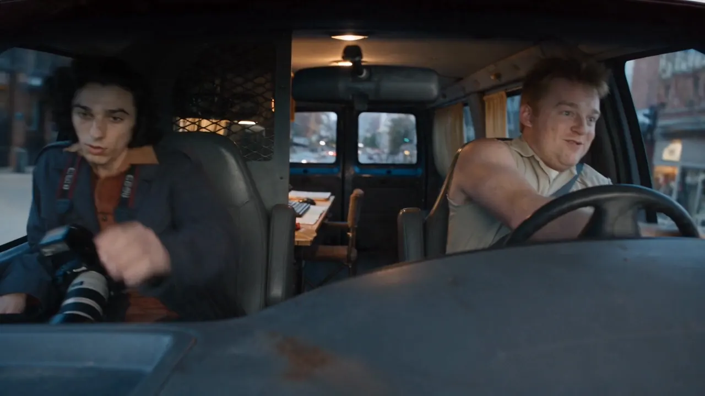
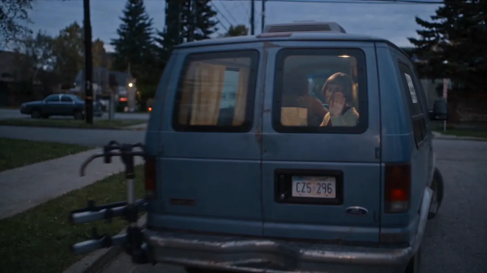
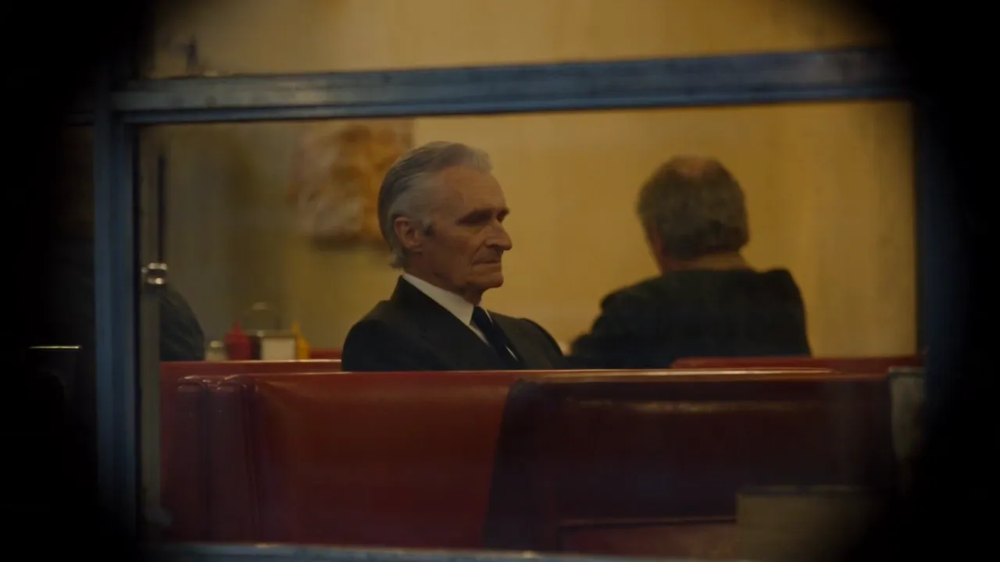
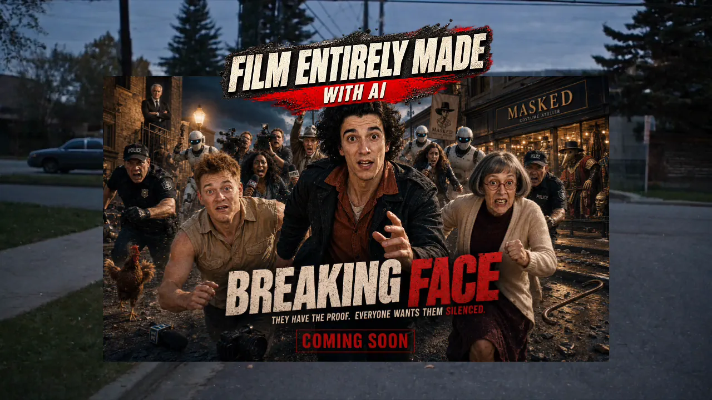
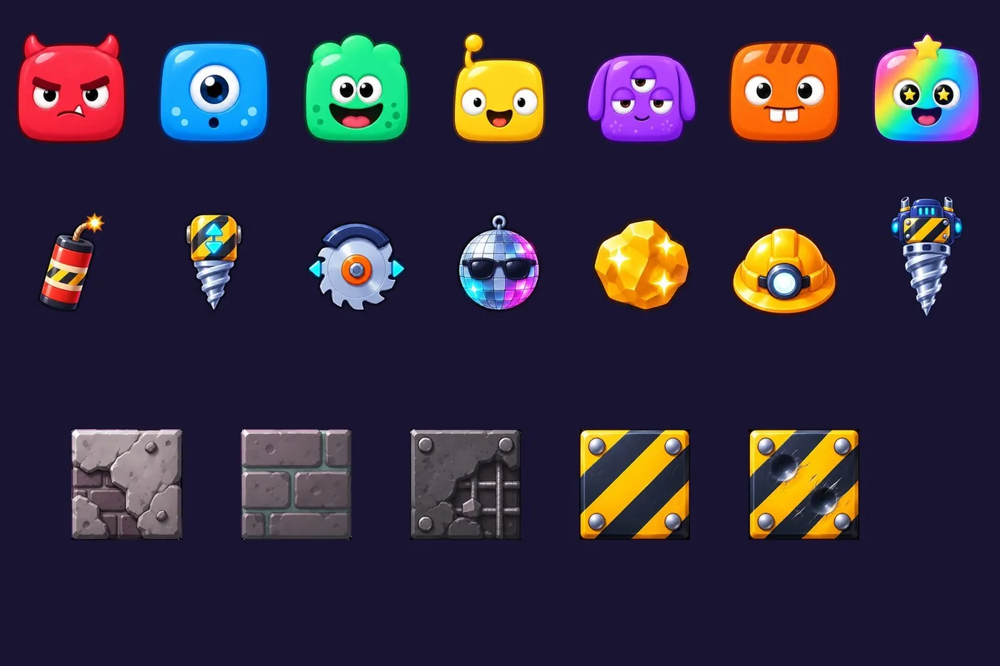

L’histoire
Eli, journaliste indépendant. Toby, son meilleur ami. Vera, une ancienne cofondatrice. Ils ont une preuve, et tout le monde la veut.
Une bande-annonce de 52 secondes : personnages, décors, voix, montage. Tout est généré. Je l’ai écrite et dirigée.
Eli, journaliste indépendant. Toby, son meilleur ami. Vera, une ancienne cofondatrice. Ils ont une preuve, et tout le monde la veut.
Chaque plan est généré, choisi, puis assemblé : cohérence des visages, lumière, mouvements de caméra, voix, rythme du montage.
Une petite équipe peut produire des images de cinéma. Ce qui fait la différence : l’écriture, la direction, le choix de chaque plan.
Quelques plans du film.






« Avant, il fallait une équipe de tournage. Aujourd’hui, il faut surtout une vision. »

J’intègre l’IA dans les équipes, en mission de 3 à 12 mois.

Monde suivant
Booply. Assemble, fais exploser, creuse.